pro_vladimir несколько раз поднималась тема галер, в том числе и вопросы, относящиеся к энергетическим характеристикам «мускульного двигателя» подобного типа кораблей. В ходе дискуссии делались ссылки и на мой пост Скорость галер, входящий в тематическую подборку, посвященную факторам, ограничивающим использование галер. В том давнем рассказе я обещал обстоятельно рассмотреть этот вопрос позже, что и выполняю, хотя и с отсрочкой более чем в восемь лет.
pro_vladimir несколько раз поднималась тема галер, в том числе и вопросы, относящиеся к энергетическим характеристикам «мускульного двигателя» подобного типа кораблей. В ходе дискуссии делались ссылки и на мой пост Скорость галер, входящий в тематическую подборку, посвященную факторам, ограничивающим использование галер. В том давнем рассказе я обещал обстоятельно рассмотреть этот вопрос позже, что и выполняю, хотя и с отсрочкой более чем в восемь лет.В продолжение обсуждения основных характеристик галеры сегодня остановимся на ее ходкости, т.е. способности корабля развивать и сохранять заданную скорость при минимальной мощности его «мускульного двигателя».
Рассматриваемая тема достаточно сложна, она предусматривает разные подходы для античных гребных судов и для галер Средневековья и Нового времени. Логичней было бы начать именно с трирем и других полирем античности, но по галерам Нового времени имеется больше достоверных данных, поэтому методику лучше отработать на них.
Сложность темы также в том, что она лежит на пересечении нескольких наук: истории, теории корабля, гидро- и аэродинамики, эргономики, физиологии человека.
Понятно, что методика расчетов во многом определяется той системой гребли, которая существовала на той или иной галере. В качестве предварительного обзора этой темы, возможно, стоит посмотреть мой пост, посвященный краткой истории развития систем гребли. Эволюция систем гребли как раз диктовалась стремлением повысить эффективность галерного «двигателя». Самый простой путь – увеличение числа гребцов – быстро приводил в тупик, связанный с невозможностью бесконечно увеличивать размеры корабля. Приходилось искать другие способы.
Перейдем к существу темы. Для рассмотрения выберем образец французской стандартной галеры с системой гребли a scaloccio, из тех, которые строили на марсельской верфи в 1680-1690 гг.
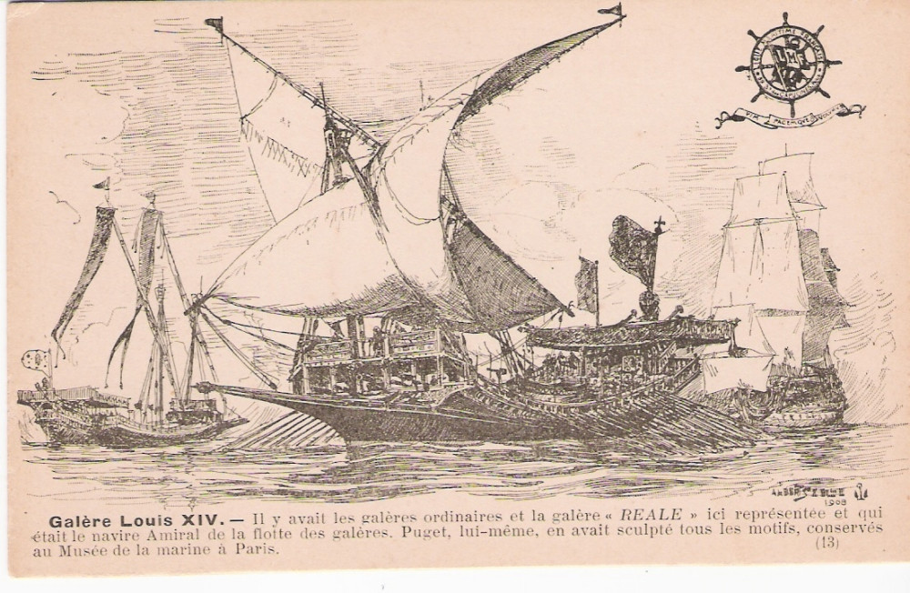
Галеры Людовика XIV.
Выбор объясняется просто: это одна из немногих галер, для которой необходимые нам численные значения величин можно получить не только из косвенных оценок, но и из прямых указаний в рукописных и чертежных документах, дошедших до наших дней.
Ниже приведена таблица величин, необходимых для наших расчетов, в которой указано, взята ли величина из документа (Изм.) или получена путем оценки (Оцен).
Таблица I
Величины и оценки величин, необходимых для модели движения галеры
1. Корпус галеры
| Размер | Обозначение | Категория величины |
|
|---|---|---|---|
| Длина по ватерлинии | 42,52 м | Lвл | Изм. |
| Ширина по миделю | 6,045 м | b | Изм. |
| Площадь смоченной поверхности | 253 м2 | Ω | Оцен. |
| Площадь надводной части корпуса | 63 м2 | Sк | Оцен. |
2. Весло
| Размер | Обозначение | Категория величины |
|
|---|---|---|---|
| Длина от уключины до рукоятки загребного | 3,76 м | LG | Изм. |
| Длина от конца лопасти до уключины | 8,045 м | LR | Изм. |
| Наибольшая ширина лопасти | 0,179 м | Cd | Изм. |
| Общая масса | 130 кг | – | Оцен. |
| Момент инерции | 1096 м2×кг | IR | Оцен. |
| Амплитуда движения лопасти в воде | 2,60 м | Dлоп | Оцен. |
3. Гребцы
| Размер | Обозначение | Категория величины |
|
|---|---|---|---|
| Амплитуда перемещения кистей рук загребного | 1,215 м | Dрзаг | Оцен. |
| Расстояние от кистей рук загребного до уключины | 3,76 м | l1 | Изм. |
| Расстояние от кистей рук 2-го гребца до уключины | 3,28 м | l2 | Оцен. |
| Расстояние от кистей рук 3-го гребца до уключины | 2,84 м | l3 | Оцен. |
| Расстояние от кистей рук 4-го гребца до уключины | 2,40 м | l4 | Оцен. |
| Расстояние от кистей рук 5-го гребца до уключины | 1,96 м | l5 | Оцен. |
| Масса тела загребного | 65 кг | Мзаг | Оцен. |
Размеры категории «Изм.» сняты в основном со строительных чертежей, хранящихся в Национальной библиотеке и Морском музее Франции. Вот пример таких чертежей:
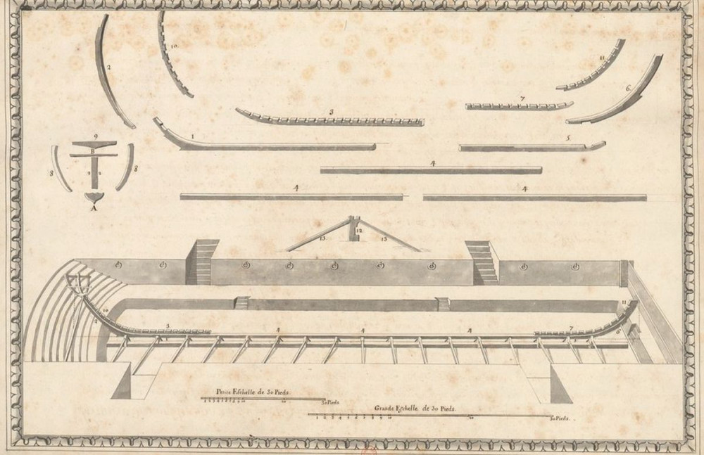
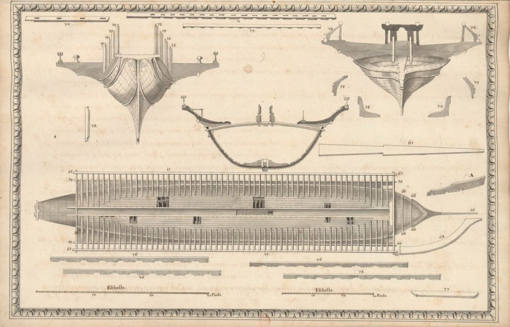
Из альбома Plans et détails des éléments constitutits d'une galère, 1730. (Коллекция дюка Ришелье).
На таких чертежах есть, как правило, два масштаба: для общего плана и для деталей. Единица длины – фут (пье, pied, pied de roi = 0,324 м).
Теперь приведем пример, как могут быть получены оценочные величины. К примеру, площадь смоченной поверхности подводной части галеры. По теоретическому чертежу галеры La Réale из Морского музея, исполненному в масштабе 1:75, можно подсчитать площадь смоченной поверхности этой галеры.
Методика такого подсчета несложна. На проекции „корпус" теоретического чертежа измеряют половины периметров подводной (смоченной) части каждого шпангоута судна Пi /2 (удобнее всего указанную операцию производить с помощью курвиметра).
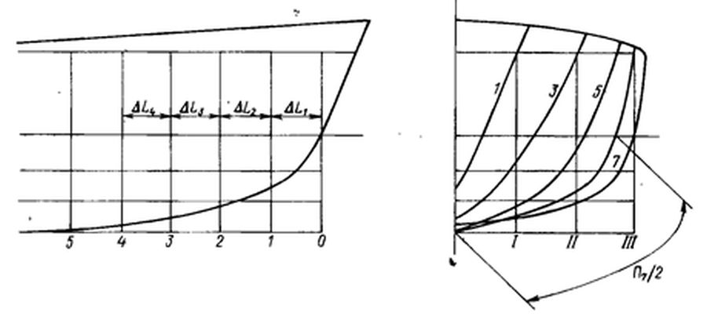
Зная масштаб чертежа, переходим от чертежного размера к полупериметрам реальных шпангоутов Рi /2 м. Находим суммы для каждой пары соседних шпангоутов Рi /2 + Рi+1 /2. Вычисляем по данным чертежа с учетом масштаба ширину каждой шпации ΔLi м. Затем следует вычисление смоченной поверхности i-той шпации (Рi/2 + Рi+1/2)· ΔLi м2, после чего и всей смоченной поверхности галеры:
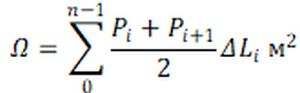
Предположив, что формы корпусов стандартной галеры и галеры La Réale идтентичны (а это так и есть в реальности), из закона пропорциональности соответствующих площадей обеих галер получим
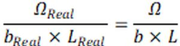
откуда
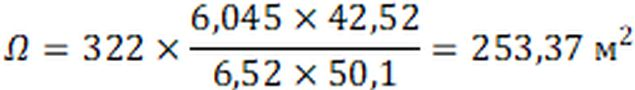
Мы не будем рассматривать задачу в общем виде, это потребует от нас большого объема абстрактных выкладок. Попытаемся решить задачу для конкретного случая
- скорость галеры (Vгал) – 5 узлов (2,572 м/с)
- скорость ветра (Vветр) – 0.
- шероховатость корпуса (h) – 0,2 мм.
- темп гребли (T) – 21 гребок в минуту.
- число весел (Nвес) – 51.
Начнем с оценки мощности, необходимой для движения галеры. Будем учитывать два вида сопротивления движению: гидродинамическое и аэродинамическое (воздушное).
Полное сопротивление воды (гидродинамическое сопротивление) движению судна можно рассматривать в виде суммы
R = Rf + Rk + Rw,
где Rf – сопротивление трения;
Rk– сопротивление формы;
Rw– волновое сопротивление.
Природа этих сил различна. Первые две обусловлены вязкостью жидкости. На корпусе галеры силы вязкости вызывают касательные напряжения, которые, суммируясь, дают силу, направленную против движения судна; она и называется сопротивлением трения Rf. Однако, силы вязкости кроме того приводят к изменению давлений, распределенных по смоченной поверхности судна, по сравнению с теми, которые имели бы место при обтекании корпуса идеальной жидкостью, лишенной свойства вязкости. Это изменение давлений, особенно падение давлений в кормовой части, приводит к дополнительной силе, называемой сопротивлением формы или вихревым сопротивлением и обозначаемой Rk.
Последний компонент в нашей формуле связан с образованием судовых волн, т.е. определяется свойством весомости жидкости (вспомним, что возникающие при движении судна волны имеют гравитационный характер).
При рассматриваемых нами скоростях движения львиную долю гидродинамического сопротивления составляет сопротивление трения. Доля сопротивления формы Rk в полном сопротивлении воды для морских судов составляет 8–15% величины R. Удельное значение волнового сопротивления зависит от относительной скорости судна или числа Фруда Fr:
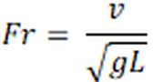
где v – скорость судна;
L – длина судна.
Опыты показывают, что при сравнительно малых скоростях движения, примерно до Fr = 0,25 , основную часть сопротивления составляет сопротивление трения (до 75 %); волновое сопротивление при этом не превышает 15–20 %. Примерное соотношение компонентов сопротивления приведено на следующем графике (полное сопротивление при каждой скорости хода принимается за 100 %).
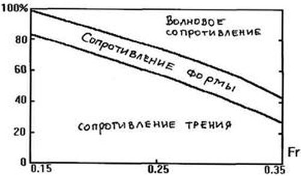
Зависимость гидродинамического сопротивления от числа Фруда.
Для случая нашей галеры число Фруда равно 0,12. А это значит что определяющим, даже подавляющим компонентом в общей формуле является сопротивление трения. Оно обычно рассчитывается как сопротивление эквивалентной пластины, имеющей площадь, равновеликую площади смоченной поверхности корпуса судна и длину, равную длине судна по действующей ватерлинии, с введением поправок на влияние кривизны и шероховатости корпуса. Коэффициент трения для этог случая приведен в следующей ниже таблице (Источник: Architecture du Voilier par Pierre Gutelle. Tome 1, page 43):
Таблица II
Величина коэффициента трения сf
(узлы) |
||||
|---|---|---|---|---|
| 0,15 | 0,2 | 0,5 | 1 | |
| 2 | 0,00254 | 0,00254 | 0,00296 | 0,00416 |
| 3 | 0,00238 | 0,00246 | 0,00301 | 0,00416 |
| 3,5 | 0,00235 | 0,00244 | 0,00305 | 0,00416 |
| 4 | 0,00233 | 0,00244 | 0,00309 | 0,00416 |
| 4,5 | 0,00233 | 0,00244 | 0,00311 | 0,00416 |
| 5 | 0,00233 | 0,00244 | 0,00313 | 0,00416 |
| 5,5 | 0,00233 | 0,00244 | 0,00314 | 0,00416 |
| 6 | 0,00233 | 0,00245 | 0,00315 | 0,00416 |
| 7 | 0,00233 | 0,00247 | 0,00316 | 0,00416 |
Далее будем рассматривать обе составляющие вязкостного сопротивления как один член
св = сf · (1 + cш).
в котором сопротивление формы учтено с помощью специального коэффициента cш. Его величина для нашего случая оценивается значением 0,08 (оценка основана на результатах экспериментов, опубликована в S. Bindel, Hydrodynamique navale, t. II, 1973) .
Окончательно для вязкостного сопротивления в нашем случае получаем
св = 0,00244 x (1 + 0,08) = 0,002635.
Как мы уже говорили выше, волновым сопротивлением для нашего случая при Vгал = 5 узлов можно пренебречь, поэтому мы можем принять общее значение коэффициента гидродинамического сопротивления движению галеры Сгидр равным св.
Учитывая, что общий вид формулы для любой силы, действующей на тело в потоке жидкости, имеет вид
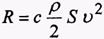
где ρ – плотность жидкости;
с – безразмерный коэффициент, зависящий от формы тела, направления набегающего потока и свойств жидкости;
S – характерная площадь тела;
v – скорость корабля по отношению к воде.
для нашего случая мы получим:
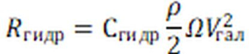
Для аэродинамического (воздушного) сопротивления надводной части галеры мы получим точно такую же по структуре формулу
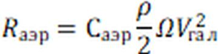
Напомним, что скорость встречного ветра мы положили равной 0. Коэффициент аэродинамического сопротивления галеры Саэр (учитывающий воздушное сопротивление надводных частей корпуса) берут равным отношению площади надводных частей к смоченной поверхности, деленному на 1000:
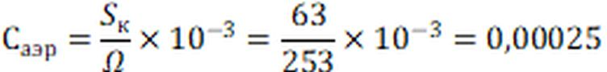
Остановимся пока, чтобы передохнуть. Понятно, что чтение такого текста не всем по душе. Но я вспоминаю, как в детстве прочитал роман Жюля Верна «Вокруг Луны». Видит бог, сейчас я забыл из него все, кроме формулы, которая там приведена.
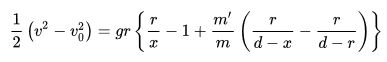
Помните?:
– Что же это значит? -- спросил Мишель.
– Это значит,– ответил Николь,– что одна вторая V в квадрате минус V нулевое в квадрате равно gr, помноженное на r, деленное на х, минус единица плюс m прим, деленное на m, умноженное на r, деленное на d минус х, минус r, деленное на d минус r...
– Икс плюс игрек на закорках у зета и верхом на р, – расхохотался Мишель.– И все это тебе понятно, капитан?
– Ничего нет понятнее.
Продолжение последует.